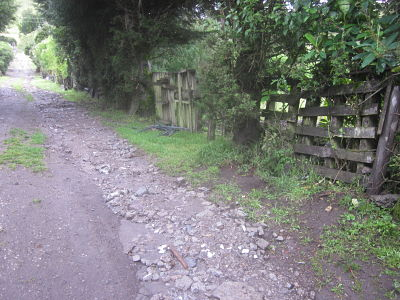
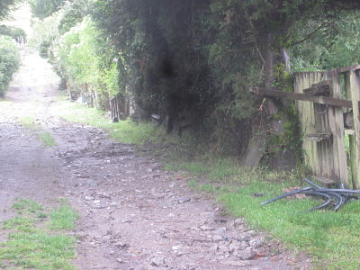
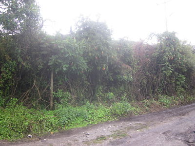
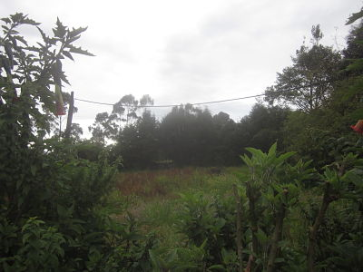
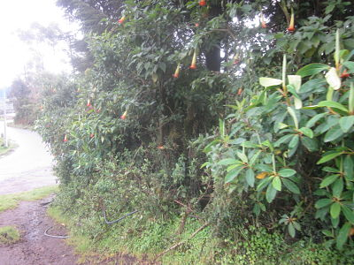

← volver al mapa
Terreno - EC-RJ-155199
EC-RJ-155199 · terreno · QUITO, Pichincha
★ Oferta destacada





Datos del remate
| Avalúo pericial | $43,562 |
| Tipo de bien | terreno |
| Área de terreno | 2,562.50 m² |
| Cantón / Provincia | QUITO, Pichincha |
| Dirección / Sector | RUNDUPAMBA. rundupamba |
| Señalamiento | Segundo Señalamiento |
| Fecha de remate | 2026-08-26 |
| No. de proceso | 1731020140949 |
Análisis vs. mercado
| Avalúo por m² | $17/m² |
| Mediana de mercado en la zona | $119/m² |
| Descuento vs. mercado | 85.7% |
| Comparables usados | 41 |
| Radio de búsqueda | 2000 m |
| Puntaje | 92/100 |
Descripción completa del avalúo
el inmueble en estudio forma parte del sector conocido como rundupamba, el terreno objeto del presente avaluó es el terreno descrito como guagrahuasi, se ubica en la parroquia de cotocollao , en la vía a nono, aproximadamente a 3km del ingreso a la roldos por la vía a nono. el lote de terreno cuenta con una pendiente aproximada del 8% en sentido este- oeste, sobre el mismo se implanta una construcción de madera la cual es completamente depreciable y no se ha considerado dentro del presente informe.se trata de un terreno de 25.625,00m2, según el registro de la propiedad, se especifica que del 100% del inmueble, el 50% corresponde a una sola persona según consta al señor pedro matabay mena y el otro 50% del inmueble a los hermanos matabay cisneros.esto significa que al ser 5 hermanos les corresponde el 10% del área de terreno total.el área total correspondiente al 50% de terreno de los cinco herederos es de 12.812,50m2, lo que corresponde al 10% es el área de 2.562,50m2.el avaluó realizado es de $43.562,50, el valor correspondiente al 10% es de $8.712,50; la aclaración solicitada corresponde al área total de 2.562,50m2 con un valor total de $8.712,50.
lote de terreno
rundupamba
Análisis de inversión (IA)
✕ Mala oportunidadEl descuento del 85.7% vs. mercado parece llamativo, pero la descripción revela que el avalúo real del 10% que se remataría es apenas $8,712.50 sobre 2,562.50 m², no $43,562.50. Se trata de derechos y acciones sobre una fracción de terreno en copropiedad compleja (6 copropietarios), ubicado en zona periurbana con acceso limitado y pendiente, lo que hace que el precio de entrada real y la utilidad esperada sean mucho menores de lo que sugiere el titular.
A favor:
- Área total del predio original es grande (25,625 m²), lo que en abstracto da contexto de escala.
- Ubicación en parroquia Cotocollao, que tiene cierta demanda residencial en Quito.
En contra:
- El bien que se adquiere es solo el 10% del inmueble total (2,562.50 m²), correspondiente a derechos y acciones de uno de cinco herederos, no un lote independiente con linderos propios.
- El avalúo real del porcentaje en juego es $8,712.50, no $43,562.50; el descuento vs. mercado calculado puede estar distorsionado si los comparables se aplicaron al predio completo o a métricas no equivalentes.
- Predio ubicado aproximadamente a 3 km del ingreso a La Roldós por vía a Nono, zona con acceso difícil y menor liquidez de reventa.
- Pendiente del 8% en sentido este-oeste reduce la edificabilidad efectiva y encarece obras.
- La construcción existente es declarada completamente depreciable, lo que indica abandono o deterioro severo del inmueble.
- Copropiedad con 6 titulares (Pedro Matabay Mena + 5 herederos Matabay Cisneros) hace prácticamente imposible usar o vender el bien sin acuerdo unánime o proceso de división judicial posterior.
Riesgos a verificar:
- Derechos y acciones: comprar un porcentaje indiviso significa que no puedes ocupar, cercar ni vender una porción física determinada sin liquidar la copropiedad, lo cual requiere acuerdo de todos los copropietarios o juicio de partición.
- Cinco herederos identificados como cotitulares del otro 50%: podrían existir disputas sucesorias internas no resueltas, embargos individuales u otros gravámenes sobre sus respectivas alícuotas.
- La descripción no menciona escritura de partición ni independización del lote, lo que sugiere que el bien nunca ha sido formalmente dividido.
- Acceso vía a Nono a 3 km de La Roldós: vía con tramos sin asfaltar o en mal estado, lo que afecta valor de mercado y dificultad de reventa.
- No se menciona disponibilidad de servicios básicos (agua potable, alcantarillado, luz) en el sector Rundupamba, crítico para cualquier desarrollo futuro.
- El cálculo de descuento del 85.7% es potencialmente engañoso si los 41 comparables de mercado no corresponden a terrenos con las mismas restricciones de copropiedad y ubicación periurbana.
Generado por IA a partir de la descripción — no es asesoría legal ni financiera.
Esta ficha es una copia de lo publicado en el sitio oficial de remates
judiciales de la Función Judicial del Ecuador, para consulta — no
reemplaza el expediente judicial. remates.funcionjudicial.gob.ec no da
un link propio por remate, por eso se generó esta página aparte.
Antes de ofertar, el expediente debe revisarlo un abogado.